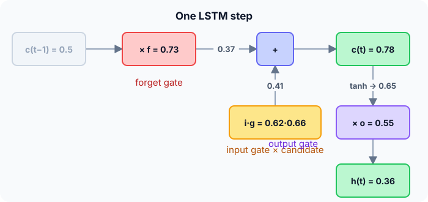

Prerequisites
- RNNs and the vanishing-gradient problem.
- Sigmoid and tanh.
- Element-wise multiplication.
The analogy
Everyday analogy
Think of a notebook kept by a diligent student. At each lesson they decide what to cross out (forget gate), what new notes to write (input gate), and what to read aloud when asked (output gate).
The notebook itself (the cell state) changes only by those deliberate crossings-out and additions, so important notes can survive for a whole term.
How it works
Gates (one step): each gate is a sigmoid of a weighted sum of $x_t$ and $h_{t-1}$: forget $f$, input $i$, output $o$; the candidate is $g = \tanh(\dots)$. Then $c_t = f \cdot c_{t-1} + i \cdot g$ and $h_t = o \cdot \tanh(c_t)$.
Start with one LSTM step by hand
Previous cell state $c_{t-1} = 0.5$. The gates' pre-activations (already computed from $x_t$ and $h_{t-1}$) are: forget 1.0, input 0.5, candidate 0.8, output 0.2. Predict, then open "Check".
Example: predict before you read
Step 1. Gate values: $f = \sigma(1.0)$, $i = \sigma(0.5)$, $g = \tanh(0.8)$, $o = \sigma(0.2)$.
Check
$f \approx 0.731$, $i \approx 0.622$, $g \approx 0.664$, $o \approx 0.550$.
Step 2. Cover the next line and guess: the new cell state $c_t = f \cdot c_{t-1} + i \cdot g$.
Check
$0.731 \cdot 0.5 + 0.622 \cdot 0.664 \approx 0.366 + 0.413 = 0.779$.
Step 3. The new hidden state $h_t = o \cdot \tanh(c_t)$.
Check
$\tanh(0.779) \approx 0.652$; $h_t \approx 0.550 \cdot 0.652 \approx 0.358$.

Quick recall: Before reading further, cover the text above and say out loud: what does each of the three gates control?
Check your answer
Forget: how much of the old cell state to keep. Input: how much of the new candidate to add. Output: how much of the cell state to expose as the hidden state.
Finish the picture: remembering and forgetting
Same old state $c_{t-1} = 0.5$, two extreme gate settings.
- $f = 1$, $i = 0$. Predict $c_t$.
Check
$c_t = 0.5$: the memory is copied unchanged. Repeating this over 100 steps keeps it intact, and its gradient factor is exactly 1.
- $f = 0$, $i = 1$, $g = 0.664$. Predict $c_t$.
Check
$c_t = 0.664$: the old memory is wiped and replaced by the new candidate.
Quick recall: Without scrolling up, say out loud: why does the forget gate close to 1 help long-range memory?
Check your answer
With $f \approx 1$ and $i \approx 0$, the cell state is copied almost unchanged, and its gradient passes through with a factor close to 1.
Full worked calculation
Two LSTM steps with every gate computed. The gates' pre-activations (the $W[h, x] + b$ sums) are given so we can focus on what the cell does with them. Step 1: $z_f = 1$, $z_i = 0.5$, $z_g = 0.8$, $z_o = 0.2$, old cell state $c = 0.5$. Step 2: $z_f = 2$, $z_i = -1$, $z_g = -0.5$, $z_o = 1$.
| Step | Forget $f$ | Input $i$ | Candidate $g$ | Output $o$ | Cell $c$ | Hidden $h$ |
|---|---|---|---|---|---|---|
| 1 | 0.731 | 0.622 | 0.664 | 0.550 | 0.779 | 0.358 |
| 2 | 0.881 | 0.269 | −0.462 | 0.731 | 0.562 | 0.372 |
-
1Step 1: the gates
$$f = \sigma(1) = 0.731, \quad i = \sigma(0.5) = 0.622, \quad o = \sigma(0.2) = 0.550, \quad g = \tanh(0.8) = 0.664$$The three gates use a sigmoid, so they are "how much" dials between 0 and 1. The candidate $g$ uses tanh, so it can be positive or negative: it is the new content.
-
2Step 1: update the cell state
$$c = f \cdot c_{\text{old}} + i \cdot g = 0.731 \cdot 0.5 + 0.622 \cdot 0.664 = 0.366 + 0.413 = 0.779$$Keep 73% of the old memory, add 62% of the new candidate. Note the addition: the old memory is not squashed through any activation on its way.
-
3Step 1: the output
$$h = o \cdot \tanh(c) = 0.550 \cdot \tanh(0.779) = 0.550 \cdot 0.652 = 0.358$$The output gate decides how much of the memory to reveal to the next layer and the next step.
-
4Step 2: the gates
$$f = \sigma(2) = 0.881, \quad i = \sigma(-1) = 0.269, \quad g = \tanh(-0.5) = -0.462, \quad o = \sigma(1) = 0.731$$This time the forget gate is high (keep most of the memory) and the input gate is low (write little).
-
5Step 2: cell and output
$$c = 0.881 \cdot 0.779 + 0.269 \cdot (-0.462) = 0.686 - 0.124 = 0.562, \qquad h = 0.731 \cdot \tanh(0.562) = 0.731 \cdot 0.509 = 0.372$$A negative candidate lowers the memory a little. Most of the value from step 1 survives because $f$ was close to 1.
-
6Why gradients survive
$$\frac{\partial c_2}{\partial c_1} = f_2 = 0.881$$Along the cell state, the backward factor per step is just the forget gate. If the network learns $f \approx 1$, information and gradients pass through many steps almost unchanged: compare 0.881 with the RNN's factors of 0.4–0.6.
What the numbers tell us
One LSTM step: $c = f \odot c_{\text{old}} + i \odot g$, then $h = o \odot \tanh(c)$. Here $c$ went 0.5 → 0.779 → 0.562 and $h$ went 0.358 → 0.372.
The additive cell update, controlled by the forget gate, is what lets LSTMs remember over long sequences.
The rule in plain words
At each step compute four values from $x_t$ and $h_{t-1}$: forget $f$, input $i$, output $o$ (sigmoids) and candidate $g$ (tanh).
Update the memory additively, $c_t = f \odot c_{t-1} + i \odot g$, then output $h_t = o \odot \tanh(c_t)$.
Quick recall: Before you read the code, describe one LSTM step in your own words. Then check below.
Check your answer
Turn the gate pre-activations into values (sigmoids, and tanh for the candidate), update the cell as forget × old + input × candidate, then output gate × tanh(new cell).
The code
Read this code after you have done the step by hand. It will make more sense.
double sig(double z) { return 1 / (1 + exp(-z)); }
void lstm_step(double zf, double zi, double zg, double zo, double c_prev, double out[]) {
double f = sig(zf), i = sig(zi), g = tanh(zg), o = sig(zo); /* gates and candidate */
double c = f * c_prev + i * g; /* additive memory update */
out[0] = c; /* new cell state */
out[1] = o * tanh(c); /* new hidden state */
}Definition
What you just did, in one line: an LSTM (long short-term memory) is a recurrent cell with a separate cell state updated additively under the control of forget, input and output gates, which lets it keep information over long sequences.
flowchart LR
CP["c(t-1)"] -->|"× forget f"| ADD["+"]
G["candidate g"] -->|"× input i"| ADD
ADD --> C["c(t)"]
C -->|"tanh, × output o"| H["h(t)"]
Putting numbers on it
Quick recall: Before looking at the formula, predict: how many gate-like weight blocks does an LSTM have compared with a plain RNN?
Check your answer
Four (forget, input, output, candidate), so about 4 times the parameters.
The LSTM equations, with our numbers:
$$c_t = f \odot c_{t-1} + i \odot g = 0.731 \cdot 0.5 + 0.622 \cdot 0.664 \approx 0.779, \qquad h_t = o \odot \tanh(c_t) \approx 0.358$$The gradient along the cell state is $\partial c_t / \partial c_{t-1} = f$: with $f$ near 1 it doesn't vanish.
| Gate | Formula | Our value | Role |
|---|---|---|---|
| Forget $f$ | $\sigma(\cdot)$ | 0.731 | Keep this share of old memory |
| Input $i$ | $\sigma(\cdot)$ | 0.622 | Add this share of the candidate |
| Candidate $g$ | $\tanh(\cdot)$ | 0.664 | Proposed new content |
| Output $o$ | $\sigma(\cdot)$ | 0.550 | Expose this share of $\tanh(c)$ |
Warning
LSTMs process sequences one step at a time, so they can't be parallelised across time steps during training. On long texts they are slower than Transformers, which replaced them in most language tasks.
Exam tip
Draw the cell: the cell-state line along the top with × (forget) and + (input × candidate), and the output gate below. Write the two update equations and explain why the "+" fixes vanishing gradients.
Common mistakes
- Mixing up the cell state $c$ (long-term memory) and the hidden state $h$ (the output).
- Using tanh for the gates; gates are sigmoids so they lie between 0 and 1.
- Forgetting that all four blocks have their own weights, about four times a plain RNN's parameters.
Try it yourself
Exercise 1 (warm-up)
With $f = 0.5$, $i = 0.5$, $g = 1.0$, $o = 1.0$ and $c_{t-1} = 2$, compute $c_t$ and $h_t$.
Hint
$\tanh(1.5) \approx 0.905$.
Answer
$c_t = 1 + 0.5 = 1.5$; $h_t = \tanh(1.5) \approx 0.905$.
Exercise 2 (a bit harder)
If the forget gate stays at 0.99 and the input gate at 0 for 100 steps, what fraction of the original memory remains? What if the forget gate is 0.9? Write your answer down before you open it.
Show answer
$0.99^{100} \approx 0.37$ remains; with 0.9, $0.9^{100} \approx 2.7 \times 10^{-5}$, practically nothing. The learned forget gate decides how long the memory lasts.
Did you know?
Did you know?
Hochreiter and Schmidhuber introduced the LSTM in 1997; the forget gate was added by Gers, Schmidhuber and Cummins in 2000.
LSTMs powered Google's speech recognition and Apple's QuickType keyboard in the mid-2010s.
Key points to remember
If you remember one thing from each line, remember the because.
- The cell state carries long-term memory because it changes only through gated multiplication and addition.
- Gradients flow far back because $\partial c_t / \partial c_{t-1} = f$, which can stay near 1.
- Gates use sigmoids because their outputs between 0 and 1 act like dimmer switches.
- The output gate decides what is visible because $h_t = o \odot \tanh(c_t)$.
- LSTMs have about 4× the parameters of an RNN because they compute four gate blocks.
Self-check questions
Answer these in order, out loud. They follow the page, so your answers become the script of your video.
- How is an LSTM like a student's notebook?
Sample answer
The student decides what to cross out, what to add and what to read aloud; the notebook (cell state) changes only through those deliberate edits.
- Compute one LSTM step with gate pre-activations 1.0, 0.5, 0.8, 0.2 and $c_{t-1} = 0.5$.
Sample answer
$f = 0.731$, $i = 0.622$, $g = 0.664$, $o = 0.550$; $c_t \approx 0.779$, $h_t \approx 0.358$.
- Why does the code apply
tanhto the candidate butsigto the gates?A good answer says what each value is for.
Sample answer
Gates are "how much" switches, so they must lie between 0 and 1 (sigmoid). The candidate is new content that can be positive or negative (tanh).
- So what is an LSTM, in one sentence?
Sample answer
A recurrent cell with a gated, additively updated cell state that lets it remember information over long sequences.
- Why does the LSTM solve the vanishing-gradient problem of plain RNNs?
A good answer compares the two gradient factors.
Sample answer
A plain RNN multiplies by $W_{hh} \tanh'$ at every step, which shrinks; along the LSTM cell state the factor is the forget gate, which the network can keep close to 1.
- Give the two LSTM update equations.
Sample answer
$c_t = f \odot c_{t-1} + i \odot g$ and $h_t = o \odot \tanh(c_t)$.
- What do the forget, input and output gates do?
Sample answer
Forget keeps part of the old memory, input adds part of the new candidate, output decides how much of the memory becomes the hidden state.
- If you had to teach this to a friend in 2 minutes, what would you leave out, and why?
Sample answer
I'd leave out the parameter count and the history. I'd keep the notebook analogy, the one-step computation, and "three gates, additive memory, gradients survive".
External resources
- Christopher Olah: Understanding LSTM networks: the classic illustrated explanation.
- PyTorch docs: nn.LSTM: equations and shapes.
- Wikipedia: Long short-term memory: history and variants.
Videos
- YouTube search: StatQuest LSTM: StatQuest's step-by-step LSTM video.